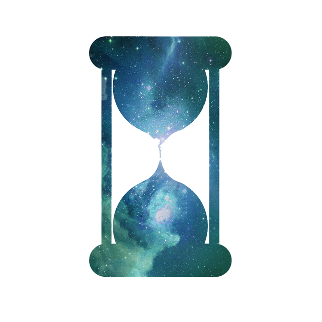
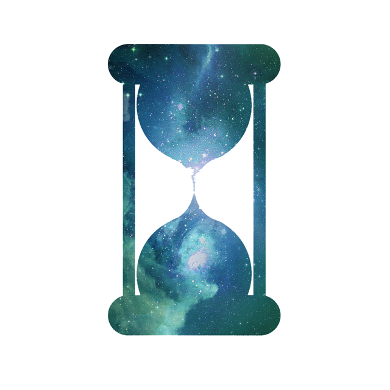

This Is My Story
In 2012 I studied Web Development at The Starter League, an intense programming boot camp. While there I honed the skill-set of a digital craftsman. Skills like HTML5, CSS3, Ruby on Rails, Javascript, and jQuery have allowed me to work on a multitude of different projects designed for various platforms. I am well accustomed to the challenges of Cross-Browser Quirks, Responsive Development, Mobile Development, and International Development. Working as a professional in the web industry these last few years has opened my eyes to a lot, and I'm reminded every day that I'm never done learning. Most recently I've been diving into new exciting javascript technologies such as AngularJS, ExpressJS, and NodeJS. I want to continue to contribute to making the web a better tool for humanity.
Shortly after becoming a professional Developer after my session at The Starter League, I began to fall in love with designing the interfaces I had been coding day in and day out. I started to follow design websites and forums and began to learn everything I could about clean and proper UX Design. I try to draw and code daily while staying involved with communities like Dribbble and Codepen. While working at Keeper Security I was often consulted in the design process and even took the lead design roles on both a website re-design as well as an app re-design. Graphic Design is something I truly enjoy, and while I'm a Developer first and foremost, I still enjoy creating both Graphic and UX Designs.

 
